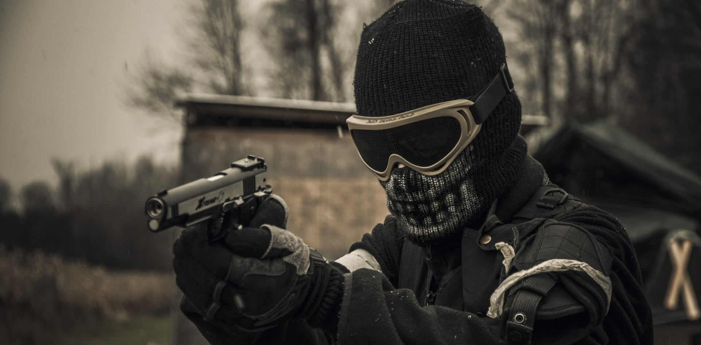
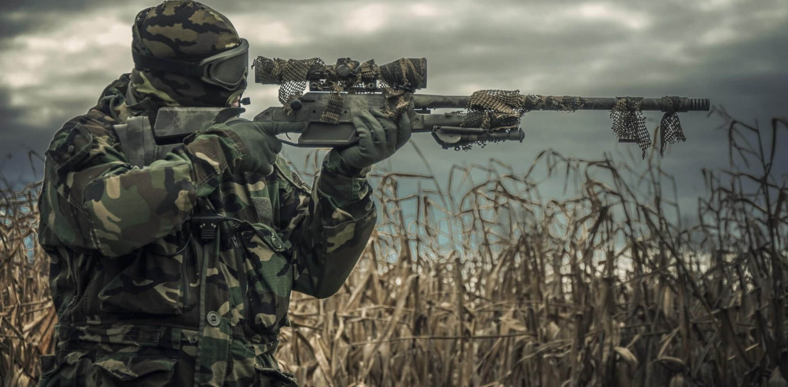

¿Que es el Airsoft?
El airsoft es un emocionante deporte táctico que simula operaciones militares y policiales mediante el uso de réplicas de armas de fuego que disparan pequeñas bolas de plástico conocidas como BBs. A diferencia de otras actividades similares, el Airsoft se centra en la simulación realista, la estrategia y el juego de equipo. Los participantes utilizan equipamiento especializado, adoptan roles específicos y se enfrentan en escenarios detalladamente diseñados, buscando la simulación más auténtica posible.
¿Como se origino el Airsoft?
El airsoft tiene sus raíces en Japón, donde a principios de la década de 1970 se desarrollaron las primeras réplicas de armas de fuego para uso recreativo. Estas réplicas, inicialmente utilizadas para prácticas de tiro, evolucionaron hacia un deporte que combina estrategia, simulación militar y adrenalina. Con el tiempo, el airsoft se expandió globalmente, convirtiéndose en una actividad popular en todo el mundo.
